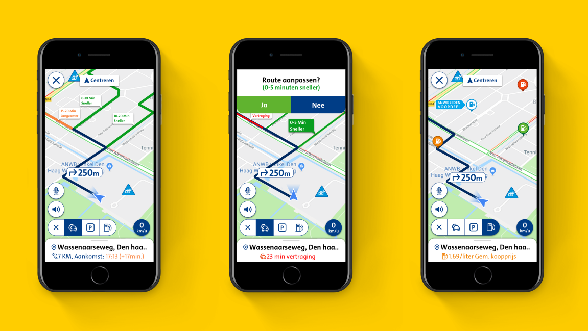
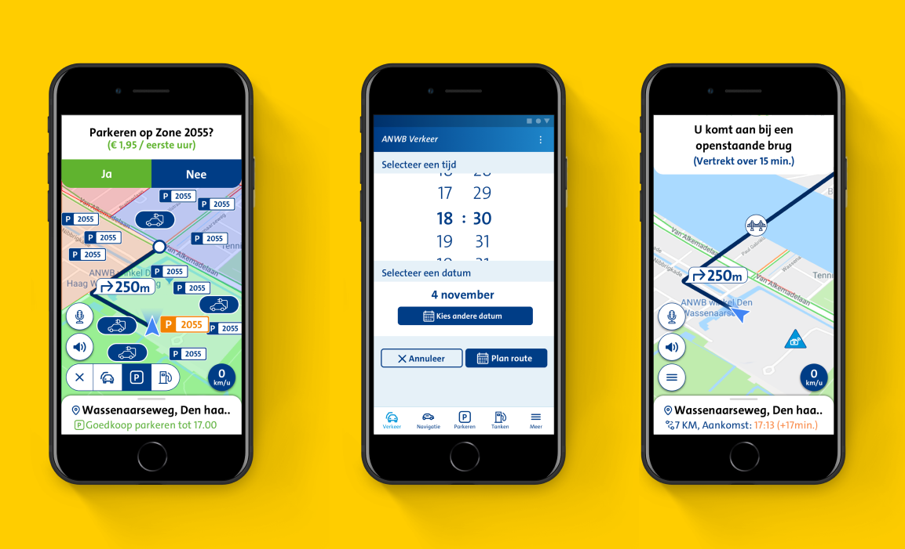

- 
-

- 
-
Issue
The average age of ANWB app users is around 55 years of age or higher. The ANWB has a need to be relevant for a younger target group, around the age of 35.
-
Objective
An objective has been formulated based on the problem definition. This objective serves as a guideline within the project so that it is clear to everyone who is working towards it. The objective formulated on the basis of the problem statement is as follows: “Making a proposal on how the ANWB Onderweg app can become more attractive for a younger target audience. This will be done by research, design and testing.”
-
Research Question
A research question has been formulated based on the problem definition and the objective. The research question formulated on the basis of the problem definition and objective goes as follows: “How can the ANWB apps become more attractive for a younger target group?” The younger target group consists of both men and women aged 25 to 40 with a driver’s license.
-
Conclusion
Young people will use the app more when route navigation and route guidance is available. The ANWB and the young people would like to have a function in the app called Ontrip. With the Ontrip function, you can use the current functions in the app while driving, in combination with route navigation and guidance. For example, while driving, the user can see if there are traffic jams, parking lots and petrol stations nearby. Meanwhile, the user can also find the fastest route to his or her location by means of route navigation and guidance. It is therefore a combination of navigation apps and functions of The Onderweg app.
-
Feedback
Based on the research I designed the Ontrip function. At the end I showed the result and everyone loved it. They defenitely wanted to use my designs and ideas in their final product of The Onderweg app.